What the language-conditioned safety filter is trained on: the five table-top tasks, the sentences that
name a rule, and the words used for objects, regions and beads, with the parts held out for the out-of-distribution
(OOD) tests. Everything below is read from the code (2026-10-20 sentence rewrite; tasks, objects and tilt limits of
2026-10-23).
5tasks5named rules25sentences (20 training, 5 OOD)6object types in the T1 pool8held-out words
Training tasks
Each task has a careless nominal controller (too fast, a bit off-aim, tilted) that sometimes harms
an item. A sentence names one rule; the filter must protect that item and leave the others alone. Every rule gives a
safety number from -1 to 1: 1 = comfortably safe, 0 = the moment of harm, below 0 = harmed.
Robot: UR5 with the WSG gripper (all current training data). Five of the seven built tasks are
used: T4 (carry a bowl of beads) was dropped on 2026-10-22, and T2 (pour without spilling, one rule, so the sentence
changed nothing) was replaced on 2026-10-23 by the redesigned T6 (three bowls). The task numbers skip 2 and 4. The T1-only run trains on task 1 alone.
"In the way" is decided by the scene layout and gives each named rule its harm or benign label for evaluation.
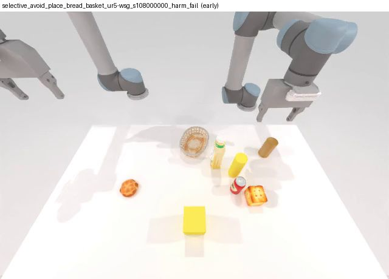
T1
Don't touch the named object
selective_avoid
Robot's job
One of the five CrossSafe pick-and-place jobs (put the cup on the plate, burger and fries on the tray, stack two blocks, stack two bowls, bread into the basket). Two or three extra objects stand on the table, all of different kinds, drawn from the hand-picked pool; one or two stand right on the arm's path.
What goes wrong
The arm, or what it is holding, brushes past or bumps one of the extra objects.
The pool chosen on 2026-10-22: wine glass, milk box, apple, bottle (3 training models each, the apple 1), coloured box, coloured tall cylinder. A layout with no extra object is skipped. The job's own objects (cup or bowl, plate, burger, fries, blocks, bowls, bread, basket, tray) are never named, but a phrase must still pick out one object among them.
In the way
Objects on or near the arm's path, plus off-path objects within 10 cm of a second path.
Safety number
Don't touch: the gap between the robot (and what it holds) and the object's real shape, minus 1 cm; 1.0 at a 6 cm gap, 0 at 1 cm. Don't move: moved more than 3 cm (tilt counts as moving).
The one task where the rule is about contact, so a hand-made distance filter should match ours. Reported as the control task.
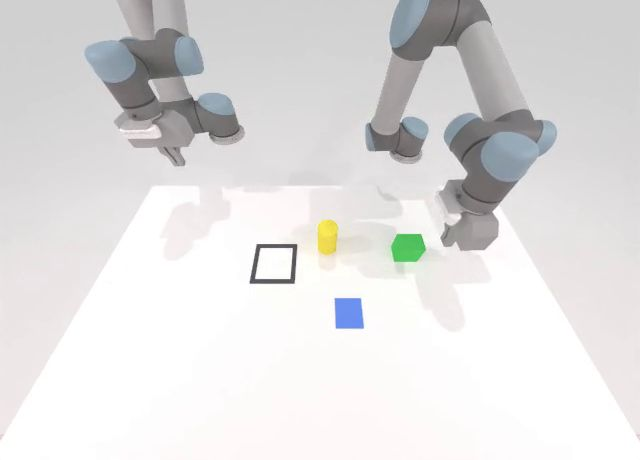
T3
Push without harming the named thing
push_zone
Robot's job
Push a coloured box across the table into a dark frame. Coloured mats and tall coloured cylinders lie on or beside the way.
What goes wrong
The straight push slides the box over a mat, or tips or shoves a standing object.
Pushed: a coloured box. Standing: coloured tall cylinders. Mats in red, green or blue.
In the way
Mats and objects on the push path.
Safety number
Mat: the box footprint's distance to the mat edge, 1.0 per 5 cm, negative once a corner is over it. Upright: (45 deg - tilt) / 45 deg. Don't move: (1.5 cm - moved) / 1.5 cm, a 45 deg tilt counting like 1.5 cm.
Keep-the-box-on-the-table is still measured but never named (no sentences).
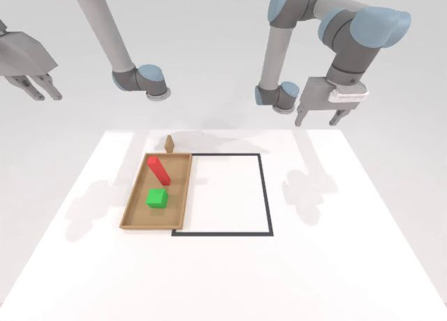
T5
Don't let the named block fall
tray_transport
Robot's job
Slide a tray carrying two standing blocks to a target frame: one tall and thin, one short.
What goes wrong
A fast slide with a sharp stop tips the tall block over. The short block stays up.
Pour the beads from a mug into the target bowl: one of three bowls (white, blue, green), picked at random each episode. The other two stand next to it, 90 degrees apart.
What goes wrong
The pour aims 16-22 cm off, toward one of the other two bowls (they stand 9-12 cm from the target), and beads land in that bowl in about 4 of 5 runs.
A mug (6 mug models), three bowls (002_bowl base 5 white, 3 blue, 7 green; colours shuffled each episode), up to 120 red beads of 6 mm. The mug and the target bowl are never named.
In the way
The bowl the pour is aimed at (either of the two, 50/50). The named bowl is either of the two, also 50/50, so half of the episodes name the bowl being hit.
Safety number
The closest bead's distance from entering the column above the named bowl (up to 1.2 cm above its rim), 1.0 per 5 cm; once beads are in, it counts them: one bead = -0.5, 20 or more = -1.
Redesigned 2026-10-23: before, a big bowl with small bins and plates around it.
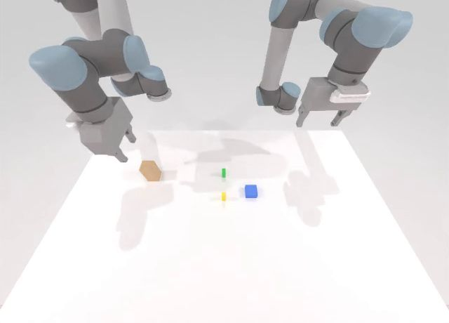
T7
Don't disturb the named block
gap_place
Robot's job
Slide a wooden block into a narrow gap between two small standing blocks.
What goes wrong
The slide is a bit off-centre, so the wooden block scrapes a neighbour and tips it or shoves it away.
The carried wooden block, two neighbours (a slim pillar or a short wide block) and sometimes a bystander block, in red, green and blue.
In the way
The neighbour the slide scrapes (named in 60% of episodes; the other neighbour 25%, the bystander 15%).
Safety number
(2 cm - moved) / 2 cm, with 45 deg of tilt counting like 2 cm. Upright: (45 deg - tilt) / 45 deg.
Constraint sentences
Five plain sentences per rule: four for training, one held out for the OOD test. A slot is filled
from the scene: obj and region with a phrase that picks out
exactly one thing in that scene, material with a bead word. No numbers ever appear in a
sentence, and the model gets no rule or task label: the sentence is the only description of the rule.
Phrase forms for an object, used only when no other object in the scene answers to them:
the nounthe colour nounthe size nounthe size colour noun
At training time every sample draws one rule of its episode and one training sentence. Batches
balance harmful and benign rules, and half of each batch pairs the same moment with a harmful and a benign rule.
Set and pair rules ("don't touch any cup") and keep-on-the-table are recorded but never named.
Neither the arm nor the object it is holding may come within 1 cm of the named object's real shape. Touching it is the violation; moving it is not required.
Training (4)
don't touch obj
avoid obj
keep away from obj
don't hit obj
OOD test (1)
don't bump into obj
Filled in, from real scenes two training fills and the OOD fill of one rule
avoid the milk boxavoid the milk cartondon't bump into the milk cartonselective_avoid
avoid the blue boxdon't touch the blue boxdon't bump into the blue boxselective_avoid
avoid the cylinderdon't hit the cylinderdon't bump into the tall cylinderselective_avoid
The named object must not be moved more than 3 cm (T1), 1.5 cm (T3) or 2 cm (T7); tilting it counts as moving it (a 45 degree tilt counts as the whole limit in T3 and T7, 20 degrees in T1). Touching it, or a small push that moves it less than the limit, is allowed. In T1 the same object always also has an avoid rule (don't touch).
Training (4)
don't move obj
leave obj where it is
keep obj where it is
make sure obj stays in place
OOD test (1)
don't let obj move
Filled in, from real scenes two training fills and the OOD fill of one rule
keep the milk carton where it isdon't move the milk cartondon't let the milk carton moveselective_avoid
make sure the cylinder stays in placemake sure the tall cylinder stays in placedon't let the tall cylinder movepush_zone
make sure the short red brick stays in placekeep the short red brick where it isdon't let the red block movegap_place
No bead may land in the named bowl: one of the two bowls that are not the pour target (the beads are meant for the target bowl).
Training (4)
keep the material out of region
don't spill any material into region
don't drop any material into region
don't let any material land in region
OOD test (1)
no material in region
Filled in, from real scenes two training fills and the OOD fill of one rule
don't spill any beads into the blue bowldon't spill any balls into the blue bowlno balls in the blue bowlclean_pour
don't spill any beads into the green bowlkeep the balls out of the green bowlno balls in the green bowlclean_pour
keep the balls out of the green bowldon't let any beads land in the green bowlno balls in the green bowlclean_pour
Object corpus
The words a sentence may use for each object a rule can name. Names and training synonyms are used
in training sentences; held-out words appear only in the held-out word test. A colour word is added for coloured
objects (primitives, mats) when it is needed to pick one out.
Name
Training synonyms
Held-out word
Named in
Models
wine glass
glass
goblet
T1
088_wineglass ids 0, 1, 2; held out: id 3
milk box
milk carton
milk
T1
038_milk-box ids 0, 1, 2; held out: id 3
apple
none
fruit
T1
035_apple id 0; held out: id 1
bottle
beverage bottle
plastic bottle
T1
001_bottle ids 0, 4, 13; held out: id 16
box+ colour
none
none
T1, T3
primitive box, 4-8 cm sides, coloured always gets a colour word when needed
cylinder, tall cylinder+ colour
none
none
T1, T3
primitive cylinder, 10-18 cm tall, coloured
block+ colour
brick
cube
T5, T7
primitive blocks, coloured, tall / short "short" / "tall" added when it picks one out
Objects that are never named
They stand in the scenes and have names, so a phrase like "the cup" is rejected when one of them
would also answer to it.
Name
Synonyms
Where
cup
mug
T1 job object (put the cup on the plate)
wooden block, block
none
T1 job object (stack two blocks)
bowl
none
T1 job object; T6's target bowl
mug
cup
T6 pouring mug (039_mug)
tray
serving tray
T1 job object, T5 tray
hamburger
burger
T1 job object
french fries
fries
T1 job object
The models
Every model the tasks draw (chosen by hand on 2026-10-22). Each object type has three training
models and one held-out model (the apple one and one); a held-out model, marked, never appears in a training scene.
T1 draws an object type uniformly, at most one of each type per scene, and never one of the job's own types. The
three widest models (wine glass 0, milk box 1 and 2) are shrunk by 10-13% so that they fit the 6 cm on-path limit
(the sizes printed on the renders are the original ones). The
book and the kettle were removed on 2026-10-22: they never fit on or near the arm's path, so they were never at
risk. The objects used before 2026-10-22 (cups, cans, pill bottles, tea and coffee boxes, wooden blocks, drink
bottles) are no longer drawn.
wine glass (088_wineglass)
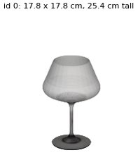
id 0 · shrunk to 87%
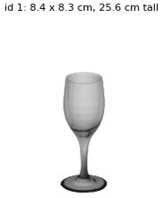
id 1
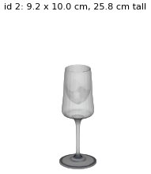
id 2
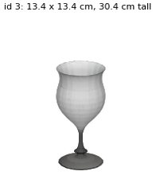
id 3 · held out
milk box (038_milk-box)
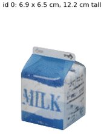
id 0
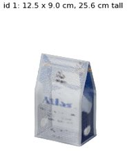
id 1 · shrunk to 88%
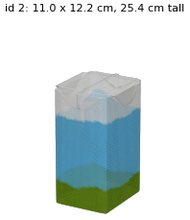
id 2 · shrunk to 90%
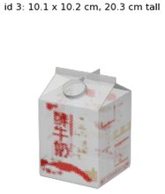
id 3 · held out
apple (035_apple)
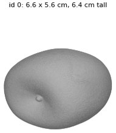
id 0
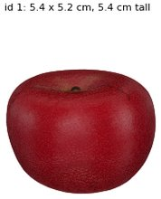
id 1 · held out
bottle (001_bottle)
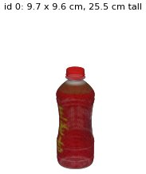
id 0
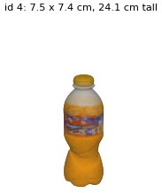
id 4
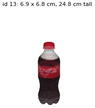
id 13
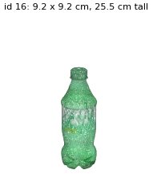
id 16 · held out
coloured box and tall cylinder (primitives)
Box sides 4-8 cm, 5-15 cm tall; cylinder radius 2-3.5 cm, 10-18 cm tall. Colour drawn from the training colours: redgreenblue
mug (039_mug), T6 pouring mug
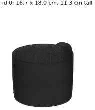
id 0
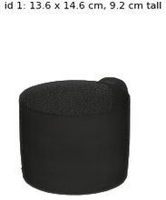
id 1
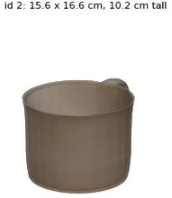
id 2
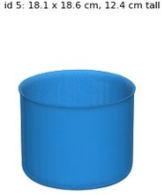
id 5
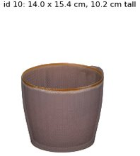
id 10
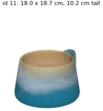
id 11
Regions, beads and colours
Region
Task
Colours
Rule
mat+ colour
T3
red, green, blue
keep the box out of it
bowl+ colour
T6
white, blue, green (the bowls' own colours)
the two bowls that are not the target; no bead may land in the named one
table
T3, T6
-
keep-the-box-on-the-table (T3) and the table-spill rule (T6) are measured but never named
Beads
Training words: beads, balls. Held-out word:
little balls.
Spheres of 6 mm (SAPIEN has no fluids). Test sentences never say rice, beans or grains.
Colours
Training: redgreenblue
Held out: purpleorange
Training scenes use only the training colours (each task uses a subset).
Held-out tests
Held-out sentence
The OOD sentence of each rule. Training never uses it.
don't bump into obj(Don't touch)
don't let obj move (Don't move)
make sure obj stays standing (Don't tip over)
don't let obj touch region(Keep out of a mat)
no material in region(Keep the beads out of a bowl)
Held-out word
Nouns never used in training. The test fills the slot with these
only.